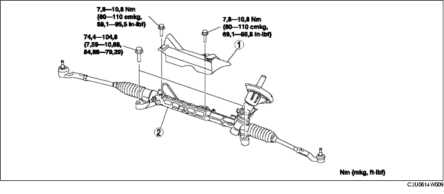

LENKGETRIEBE UND -GESTÄNGE AUSBAUEN/EINBAUEN
B3E061432960W01
-
Achtung
-
• Die Durchführung der folgenden Maßnahme ohne vorherige Demontage des ABS-Raddrehzahlsensors kann zu einer Unterbrechung im Kabelbaum führen, wenn versehentlich daran gezogen wird. Den Kabelbaumsteckverbinder des Raddrehzahlsensors (achsseitig) vor dem Ausführen der folgenden Arbeitsschritte unbedingt lösen und den Kabelbaum an einer geeigneten Stelle befestigen, damit an ihm während der Arbeiten am Fahrzeug nicht versehentliches gezogen werden kann.
1. Den Vorderachs-Fahrschemel, vorderen Stabilisator, unteren Querlenker und Lenkgetriebe und -gestänge als gesamte Einheit ausbauen. (Siehe VORDERACHS-FAHRSCHEMEL AUSBAUEN/EINBAUEN.)
2. Gemäß der Reihenfolge in der Tabelle ausbauen.
3. Der Einbau erfolgt in umgekehrter Reihenfolge.
4. Nach dem Einbau, die Vorderachsgeometrie prüfen und ggf. einstellen. (Siehe VORDERACHSGEOMETRIE.)

.
|
1
|
Isolierung
|
|
2
|
Lenkgetriebe und -gestänge
|